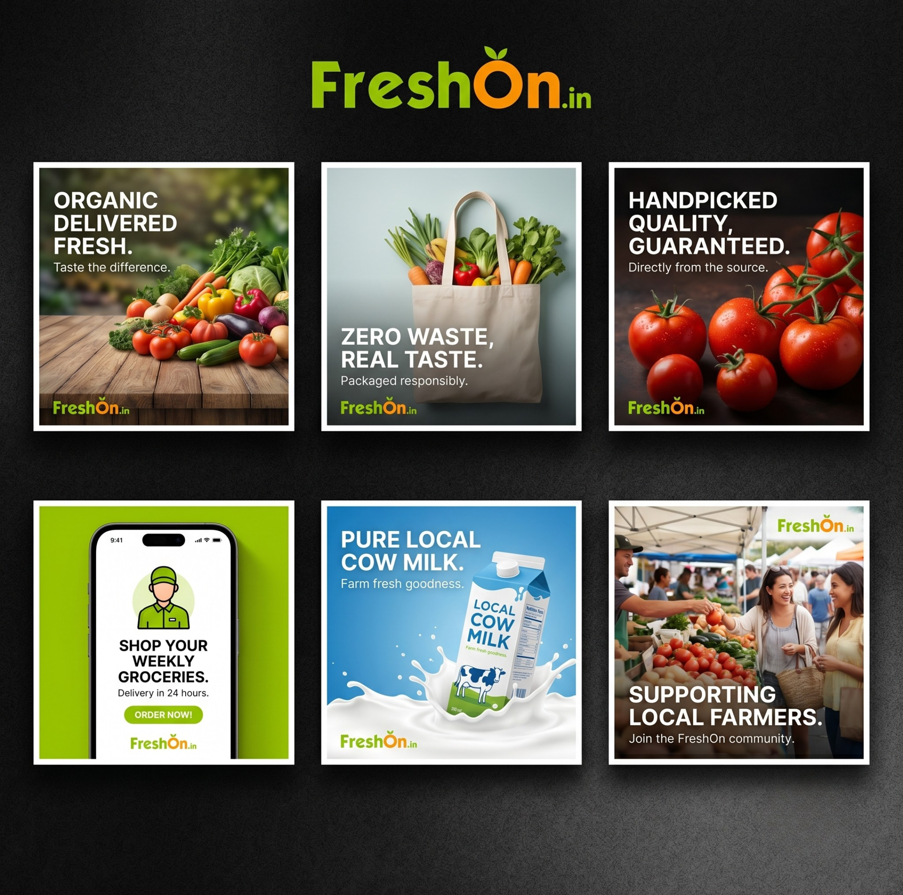
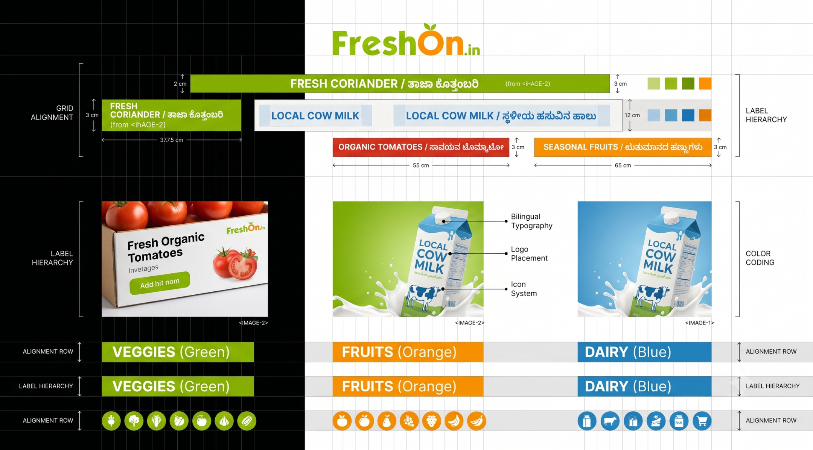

FreshOn Product + Campaign System
A grocery brand has to survive contact with a dozen surfaces — a phone screen, a shelf strip, a brochure, a social post, a product wrapper — and still read as one brand. This is the system I built to make that hold, from the app mockups down to the bilingual price label on the shelf.

One brand, a dozen surfaces that all behave differently.
FreshOn is an organic grocery in Bengaluru, and the brand had to show up almost everywhere: an app screen, a social promo, a printed brochure, in-store graphics, packaging, and the price label on the shelf. Each of those surfaces has its own rules — a glowing phone screen, a compressed social thumbnail, and ink printed on a shelf strip do not behave the same way.
The real question was less "make a nice poster" and more: how do you keep a grocery brand recognisable when the same identity has to move from a phone to a menu to a shelf strip to a product wrapper — at different sizes, on different materials, read from different distances? A one-off design doesn't answer that. A system does.
The brand across product, print, retail, and screen.
I worked across the surfaces below, treating them as one connected identity rather than a pile of separate deliverables.
- Social & campaign design — repeatable layouts for grocery promotions and posts.
- App UI visuals — screen concepts designed as part of the same identity, not a separate world.
- Brochures & store graphics — printed communication for the in-store experience.
- Packaging explorations — how the brand sits on an actual product.
- Bilingual retail labels — Kannada-English shelf labels with a clear reading hierarchy.
One identity, radiating outward.
Instead of designing each artifact from a blank page, I built repeatable layouts around the FreshOn identity — so a new promo, screen, or label could be produced quickly and still unmistakably read as FreshOn.

Two scripts, one shelf, one second to read it.
The bilingual retail labels were the most interesting design problem. Kannada and English are two scripts with different visual weight, height, and density — stack them naively and one fights the other. And a shelf label isn't read like a page; it's scanned at arm's length in about a second, so the hierarchy is the whole job: what does the eye hit first, and does the price stay legible from a step back?
So I designed the labels around a decided reading order rather than giving both languages equal weight — matching their optical sizes, choosing what leads, and protecting the product name and price at shelf distance.
- Decide the lead. Both languages can't be first; the product name carries the primary size, the second script sits at a matched optical weight beneath it.
- Protect the price. On a shelf, price legibility beats decoration — it holds its own zone and contrast.
- One hierarchy, not two. The scripts share a single reading order instead of competing for attention.
- Read at distance. Sizes and contrast are set for arm's length, not for a screen you hold close.

The Kannada in the anatomy above is a placeholder ("ಉತ್ಪನ್ನದ ಹೆಸರು" = "product name"); the board shows the real label copy.
The judgment calls, and why I made them.
Build a system, not posters
Repeatable layouts around the identity instead of designing each promo from scratch.
A grocery ships new promotions constantly. A system keeps everything on-brand at speed and lets someone who isn't a designer stay consistent — it scales past me.
Decide what the label leads with
A set reading order for the bilingual labels rather than equal weight for both scripts.
Bilingual plus shelf distance means you can't center everything. Choosing the lead — product, then price, then the script pairing — is what makes it readable.
Packaging and app as one ecosystem
Designed the on-product and on-screen experiences to belong together.
A customer meets the brand on the shelf and on their phone in the same week. Those touchpoints should feel like one thing, not two teams.
Design for the material, not the screen
Judged colour and contrast for where each surface actually lives.
A colour that pops on a backlit phone can go flat as printed ink. The label had to work on paper and plastic, not just in the design file.
Where it got hard.
Wildly different surfaces
The same mark on a 1080px social tile and a small printed shelf strip.
Identity rules that survive scaling, plus a layout system rather than one-off compositions per artifact.
Two scripts competing
Kannada and English have different density and height; naive stacking makes them clash.
Matched optical sizes and one decided reading order, so the scripts cooperate instead of fighting.
Screen colour vs printed ink
What looks right on a monitor can shift once it's printed.
Checked contrast and colour for the material each surface uses, not just the on-screen preview.
The reason my portfolio isn't only data.
I can run the analysis — but I also care about the final object: how it looks, how it reads, whether it feels consistent, and whether a person can actually use it. FreshOn is where that half of my work lives.
Analysis is only useful once someone can read it. The same instinct that makes a shelf label legible at arm's length — decide the hierarchy, protect what matters, design for the real context — is the one I bring to a dashboard or a report. Sitting between the data and the design is where I'm most useful.